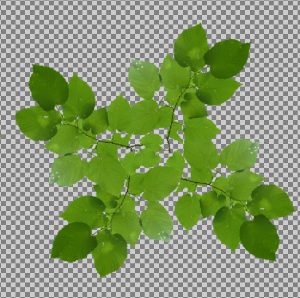

coosadog
I’ve been trying to get this right for days. I have a lot of low poly models. I use AssetImporter to convert them and assim does a good job for me. But, when I put them in my scene, the material texture is all wonked up! It’s a tree with planes for the leaf areas and the image appears to be so messed up that you can’t recognize it. The only thing that’s correct is it’s green. Haha! Here’s what they look like:
Here’s my texture:

Material:
<?xml version="1.0"?>
<material>
<technique name="Techniques/DiffAlpha.xml" />
<texture unit="diffuse" name="stp-models/vegetation/tree-basswood-medium/Textures/leaves.png" />
<parameter name="MatDiffColor" value="1 1 1 1" />
<parameter name="MatSpecColor" value="1 1 1 10" />
<parameter name="MatEmissiveColor" value="0 0 0 1" />
</material>
My code:
object->SetModel(cache->GetResource<Model>("stp-models/vegetation/tree-basswood-medium/tree.mdl"));
object->SetMaterial(0,cache->GetResource<Material>("stp-models/vegetation/tree-basswood-medium/Materials/MD3__default__leaves_.xml"));
object->SetMaterial(1,cache->GetResource<Material>("stp-models/vegetation/tree-basswood-medium/Materials/MD3__default__bark_.xml"));